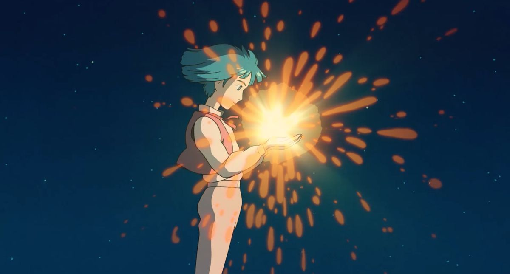
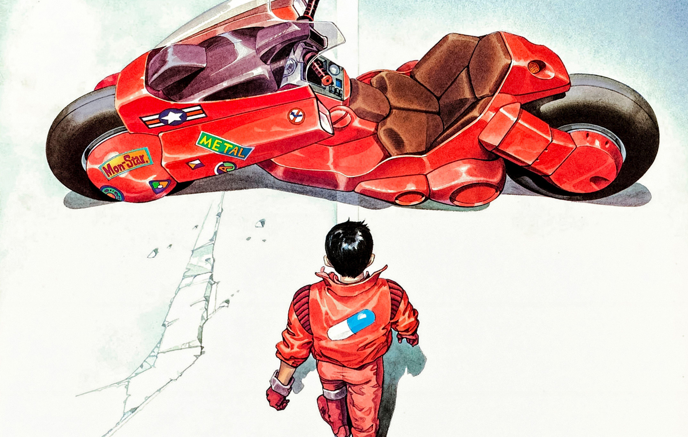

monthy log of some people, places, things, and ideas that have provided me with motivation, aesthetic appeal, and/or solace
books (re)read
GreenPill Podcast
Howl's Moving Castle
"There you are sweetheart, sorry I'm late, I was looking everywhere for you."

Architectural Digest Videos
devin booker
scottie pippen
japanese inspired
books (re)read
The Wind-Up Bird Chronicle - Haruki Murakami
Deep Work - Cal Newport
Jimi Hendrix
Not Past It Podcast
Akira

books (re)read
Man's Search for Meaning - Viktor Frankl
ethereum website design
website
baki the grappler
"If someone is born a male, at least once in his life he'll dream of becoming the strongest man alive.
Grappler, the martial artist who aims to become the strongest in the world!"

the two-headed calf, by Laura Gilpin
poem
ryo asuka aesthetic